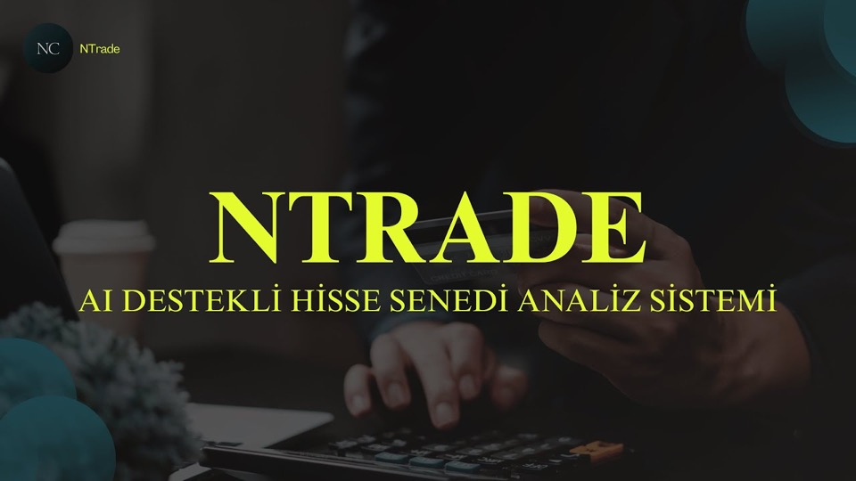

Yapay Zeka Destekli Hisse Senedi Fiyat Tahmin Uygulaması (Lisans Bitirme Projesi)
Borsa İstanbul hisseleri için LSTM tabanlı derin öğrenme modelleriyle bir sonraki işlem gününün kapanış fiyatını tahmin eden, Streamlit arayüzlü yapay zeka destekli fiyat tahmin platformu.
Yapay Zeka
LSTM
Python
Streamlit